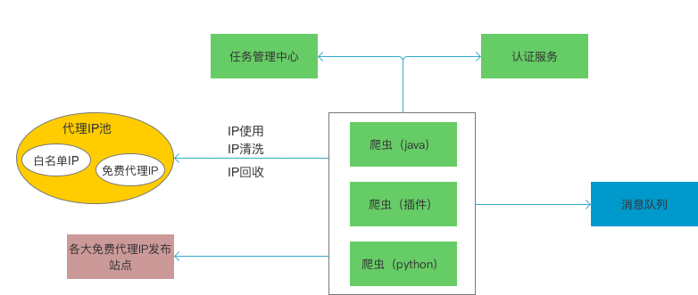
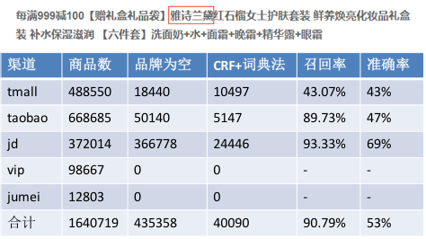

大数据采购选品
Name：王伟、李雪园
Department：智慧供应链
目的
-
竞品平台新品监控：每天预计可推荐1000+新品
-
通过智能选品，为新品引入提供决策依据，提高选品质量，从而降低新品转滞销率。
-
智能化推荐， 提高采销选品效率，降低人力成本
竞品
-
天猫国际(30w+商品)
-
淘宝全球购(50w+商品)
-
京东国际(20w+商品)
-
唯品会(5w+商品)
-
聚美优品(3w+商品)
-
云集
-
贝店
-
全球捕手
爬虫
-
如何灵活的调整爬取任务？动态配置爬取任务，根据规则取值
-
如何解决代理IP的问题？网上爬取免费代理IP
-
如何解决认证？验证码破解、破解防爬

数据分析案例-品牌补全
有许多商品的品牌不能直接爬取到，但是隐含在标题中，如何从标题中提取出品牌信息？

数据分析案例-竞品匹配
如何区分是否考拉已有商品？
-
人肉匹配
-
通过竞品app条形码接口返回竞品商品信息
-
标题相似度
-
图片相似度
POP数据分析角度
-
品牌数
-
在售商品数
-
在售点评
-
销量/评论
-
销售额
-
新品/新品牌榜
-
店铺/新店铺榜
-
日环比
-
爆品榜
未来计划
-
对接采购选品，流程线上化
-
考拉之星
-
算法推荐爆品、潜力品
/